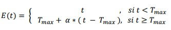
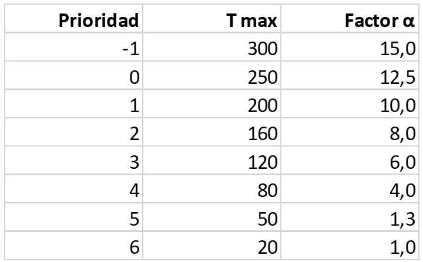
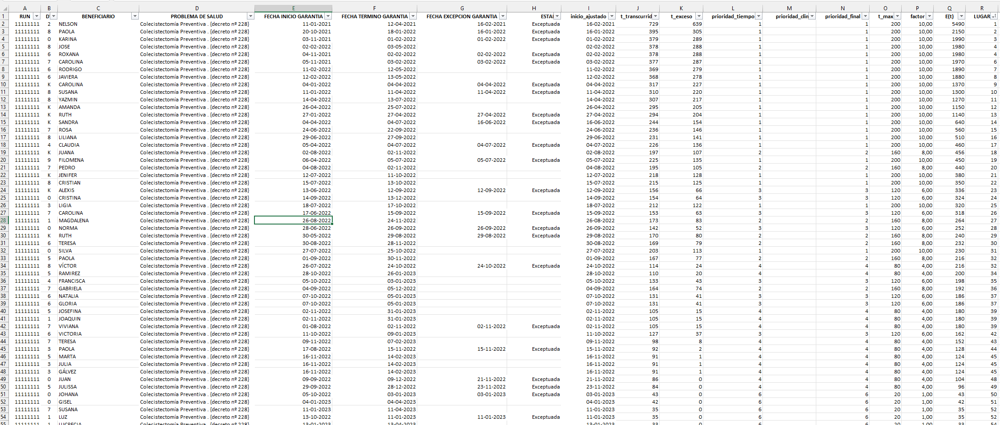

Hola! 👋
Hace tiempo que no escribía un artículo en el blog. Gracias por estar por estos lados nuevamente.
El contexto
En esta oportunidad te quiero hablar sobre el GES (Garantías Explicitas en Salud), que es una parte fundamental de la reforma de salud que se hizo en Chile allá por los años 2004 y 2005. Esta es una Ley que establece, entre otras cosas, 4 ejes claves (o garantías): garantía de acceso, garantía financiera, garantía de calidad y garantía de oportunidad. En este articulo me voy a referir, principalmente, a la última.
La garantía de oportunidad establece plazos máximos para que los pacientes reciban determinadas prestaciones de salud como atenciones médicas, realizarse estudios de imagenología, ser operados o recibir algún medicamente, por ejemplo. Estos plazos están delimitados por tipos de patologías y la etapa asistencial en que se encuentre un paciente. Esto hace que los plazos máximos dependan de cada patología y de su etapa (sospecha, estudios, tratamiento, seguimiento o rehabilitación).
Actualmente hay 87 grupos de patologías incluidas en el GES. El listado completo de patologías lo puedes revisar en la web oficial ministerial.
Del mismo modo, estos plazos y las prestaciones asociades, determinan un derecho exigible por los pacientes, pudiendo reclamar por ellos cuando no son entregados de forma oportuna y en la manera indicada. Además, estas patologías tienen una valoración mas alta que otras prestaciones similares, pero que no corresponden al GES. Esto hace que los ingresos financieros de las instituciones de salud derivados de las atenciones de pacientes GES tengan un importante peso en los presupuestos anuales. Es decir, hay un incentivo a la atención de estos pacientes, tanto financiero como legal.
Ya. Ok… Mucha palabrería jaja 😅
Pero era importante situarte en el contexto y explicarte eso antes. En especial si no sabes nada del GES.
Existe una plataforma llamada SIGGES (mantenida por FONASA), que es una aplicación web en donde se realizan los registros de los pacientes ingresados al GES. Además, esta plataforma sirve para registrar las atenciones y prestaciones entregadas a los pacientes de la cual se desprenden las transferencias financieras de las que hablaba antes y mantiene un sistema de conteo de los plazos y tiempos de espera para cada paciente, en base a su patología y etapa. Cada institución pública tiene un grupo de pacientes asignados para resolver, ya sea porque fue atendido en la misma institución o fue derivado desde otro centro o atención primaria.
El tema es que esta plataforma si bien podría considerarse buena para efectos de registros (estoy siendo generoso, la verdad. Es mala, compleja y requiere 100% de actividad manual para mantenerla al día), para monitoreo es peor. Ofrece algunas funcionalidades para descargar información de los pacientes en formatos Excel, pero de forma segmentada.
Te explico…
Los pacientes GES pueden estar en 2 grandes categorías: abiertos y cerrados.
Los casos abiertos implican que aun hay cosas que tiene pendientes los pacientes. Los cerrados es que ya cumplieron todas las etapas o bien, se cerró por alguna causal (como fallecimiento, cambios de seguro de salud, rechazo de las atenciones o indicación médica, por ejemplo).
Los casos cerrados los voy a dejar de lado por ahora. Me voy a preocupar de los casos abiertos. Es decir, de aquellos que tiene pendiente alguna prestación o definición diagnostica o de tratamiento.
Los casos abiertos pueden estar en alguna de estas 3 categorías: vigentes, retrasados o exceptuados.
Los casos vigentes son pacientes que se encuentran dentro del plazo legal garantizado (para una determinada patología y etapa asistencial).
Los casos retrasados son pacientes que excedieron el plazo legal.
Y los exceptuados son pacientes a los cuales se les catalogó como tal en algún momento. Estas excepciones corresponden a situaciones inherentes a los pacientes y que impiden o retrasan la entrega de las prestaciones establecidas en el GES. Por ejemplo, una patología podría tener un plazo de 30 días para que un paciente sea citado a evaluación medica de especialidad. Pero el paciente refiere que esta de viaje y que no puede asistir en la fecha ofrecida por la institución, sino hasta varias semanas mas tarde. Esta es una situación ajena a la organización e inherente al paciente, por cuanto se podría exceptuar y postergar la plazo GES. Estas excepciones están normadas y descritas en la documentación GES.
Ok.
Hasta ahora, todo muy interesante, pero nada muy problemático.
Hasta ahora…
El problema
El problema comienza porque, por defecto, no hay un solo listado de pacientes GES. Están segmentados por patologías (las 87), lo cual parece razonable. Pero también están segmentados, a su vez, entre casos abiertos y cerrados, entre vigentes, retrasados y exceptuados.
Todos estos listados hacen que no podamos tener un solo listado único.
Y a estas alturas te estarás preguntando… ¿Y por qué tanta relevancia tener un listado único?
El disponer de un solo listado permite tener a todos los pacientes en solo 1 repositorio de datos, lo que facilita la búsqueda. Además, y quizás lo mas relevante, es que se pueden ordenar.
Y este orden es importantísimo! Pues permite tener una visión general del estado de los pacientes y ayudar a priorizar casos en virtud de su orden de prelación.
¿Pero cómo construir ese orden?
Ordenar a los pacientes no es una tarea banal. Por el contrario, es algo muy complejo. En este artículo no pretendo ser la referencia máxima ni ser el modelo definitivo. Existen, por lo demás, diversas metodologías para ordena a pacientes y priorizarlos, como los modelos DELPHI u otros sistemas basados en la inclusión de factores de riesgo, factores sociales o de riesgo de mortalidad. Incluso modelos en donde se pueden usar algoritmos de inteligencia artificial para clasificación no supervisada.
En esta ocasión quiero ser más pragmático, menos filosófico y más concreto. Y usar lo que hay, sin ponerme muy creativo ni impulsar grandes cambios culturales ni tecnológicos. No. Solo deseo ser simple y extremádamente práctico.
Por ello, usaré algunos datos descargables del SIGGES y un Excel. Solo eso, de modo que sea muy simple el que lo uses en tu institución sin grandes complicaciones y desde el día cero.
Lo que busco con ese orden es responder la pregunta hipotética: Si tuviera un cupo para mañana, ¿A quién cito?
La solución
Para responder esa pregunta, es necesario tener a los pacientes ordenados, desde el con mayor prioridad hasta al con menos prioridad. De modo, que si tengo un cupo, cito al primero de ese listado. Si tengo 2 cupos, cito a los 2 primeros y así sucesivamente. También es cierto que quizás el pcte en el lugar 1 no pueda asistir o no tenga las condiciones (o estudios) para hacerlo, entonces paso al segundo. Si este tampoco tiene las condiciones, paso al tercero. El tema es diseñar ese orden de prelación ex-ante y mantenerlo en vista al momento de citarlos o de programar para procedimientos o cirugías.
Del mismo modo, este listado ordenado ayuda a brindar transparencia al proceso y dar explicabilidad de porque citar a un paciente primero que otro. Estos elementos (transparencia y explicabilidad) son fundamentales en el manejo ético y responsable de datos.
Otro punto relevante, es evitar sesgos.
Acá los sesgos están más enfocados a privilegiar a determinados grupos de pacientes, como suele hacerse en la gestión habitual de garantías GES. Es habitual que haya mayor interés en resolver y atender a pacientes retrasados que vigentes. Esto ocurre porque existen una serie de indicadores de evaluación de desempeño institucional que miden preferentemente la disminución de garantías retrasadas. Por otro lado, los pacientes exceptuados dejar de ser visibles a los sistemas de monitoreo, lo que disminuyen sus posibilidades de atención y resolución.
El generar un listado único, con todos los pacientes vigentes, retrasados y exceptuados ayuda a dar visibilidad a todos los pacientes pendientes y el orden de éstos, a brindar posibilidades de atención en base a sus tiempos de espera y plazos máximos. Es, teóricamente, un modelo más justo.
Pues bien… ya sabemos que necesitamos ese listado ordenado, no solo para ayudar a la decisión de a quienes priorizar, sino que ser mas transparentes y evitar sesgos de selección.
¿Y cómo ordenarlos?
Buena pregunta!!!
¿Como generar ese orden?
Como te mencioné antes, no quiero ponerme filosófico acá, seré intensamente pragmático. Los pacientes GES que cuentan con garantía de oportunidad tienen definidos por Ley los plazos máximos de atencion o de entrega de determinadas prestaciones. Eso es algo que no podemos obviar. Es Ley.
Sin embargo, no es lo único debemos considerar.
Este orden debería ayudar a resolver las siguientes situaciones:
Resolver los pacientes excedidos en sus plazos.
Evitar que los pacientes pasen del plazo garantizado.
No es lo mismo estar excedido en 1 día que en 100 días.
No es lo mismo estar a 5 días de que se cumpla el plazo máximo, que estar a 90.
La mezcla de pacientes debe incluir a los 3 tipos de categorías.
Evitar solo resolver retrasados.
Para lo anterior, una forma de abordarlo es definir un tiempo de espera específico para cada paciente ajustado por un factor de apalancamiento.
Este factor de apalancamiento lo que hace es dar mayor peso a determinados grupos de pacientes. Por ejemplo, dar mayor prioridad a personas más excedidas en su plazo que los que tienen menos tiempo de exceso. Del mismo modo, un día de exceso de pacientes con mucho retraso es proporcionalmente mayor que 1 día de alguien con poco retraso. Este factor también se aplica a pacientes vigentes, de modo de generar mayor relevancia a pacientes próximos a vencer que casos recién derivados.
Este modelo de apalancamiento no es idea original mía, sino que fue descrita en una tesis de magister de la Universidad de Chile, en donde aplicaron este concepto en la gestión de pabellones en un hospital público pediátrico. No tengo claro si realmente lograron implementarlo y dejarlo en producción o solo fue un piloto. Pero este concepto me gustó. Le hice algunos ajustes para aplicarlo a GES, pero es una idea similar.
El modelo implica establecer una espera apalancada E(t).
En el caso de que el tiempo de espera sea menor a un tiempo máximo definido (T max.), el tiempo de espera es propio tiempo de espera contado en días. En el caso de que el tiempo de espera sea mayor al tiempo máximo, se debe aplicar el factor de apalancamiento (α).
Si lo vemos como fórmula, tenemos:

Para el caso de las patologías GES, ya tenemos un plazo máximo, que es el legal. Pero eso es insuficiente. Es necesario diseñar una tabla con plazos intermedios y de mayor rango para abordar las situaciones antes mencionadas.
Para los efectos de este artículo y a modo de prueba, tomé la patología de colecistectomía preventiva. Esto es por varios motivos. Esta patología tiende a ser una de las con mayor número de pacientes derivados a los hospitales (sin contar las de oftalmología y ayudas técnicas) y para el caso de pabellón, es de las más comunes. Además, solo tiene 1 garantía que es la de intervención quirúrgica. Eso facilita el ejemplo.
El plazo legal GES es de 90 días (desde la derivación hasta la intervención quirúrgica).
He construido la siguiente tabla con tiempos máximos en distintos cortes:

T max corresponden a determinados cortes en el tiempo transcurrido desde la derivación. Por tanto, los cortes de 20, 50 y 80 días son de pacientes que están dentro del plazo legal (recuerda que es de 90) y los demás aplican para pacientes que excedieron el plazo máximo. Todos estos cortes ayudan a diferenciarlos en el listado único y generar un factor de apalancamiento para cada segmento. Ya te explico lo de la prioridad.
El factor α es calculado. Se realiza dividiendo el T max por el valor mínimo de T max en la tabla.
Así, para la prioridad 2, el factor de apalancamiento se obtiene de 160/20 = 8. Para la prioridad 5, se obtiene de 50/20 = 1.3
Aplicando esa formula a cada campo, se puede construir la tabla sin problemas.
Este factor de apalancamiento lo que hace es dar más peso a los días que pasan un determinado corte. Por ejemplo, un día de un paciente con 15 días de tiempo transcurrido equivale a 12.5 días de un paciente con más de 250 días.
Esta tabla esta pensada para la patología GES de colecistectomía. Para otras patologías es necesario ajustarla a los plazos legales y generar los cortes (T max), según sea necesario. Esta construcción es en base a la experiencia en la gestión y a necesidades de cada organización. Es recomendable que sea ajustada para cada caso. Y de preferencia, hacer una tabla para cada garantía, pues los plazos pueden varias entre ellos. De todas formas, no recomiendo aplicarlo a todas las patologías y a todas las garantías en un principio, sino que focalizarlas en donde tenga mayor beneficio. Ahora, si cuentas con la capacidad de hacerlo y dispones de alguna plataforma que te facilite estas labores, podrías hacerlo.
En todo caso, te dejaré disponible el Excel para lo puedas revisar con calma, mirar las fórmulas y usarlo de ejemplo.
Ahora veamos cómo generar el algoritmo y aplicarlo a los pacientes.
El algoritmo
En el Excel, además, de los datos propios de los pacientes, te encontrarás con varios campos calculados.
Te los explico brevemente.
inicio_ajustado: este campo corresponde a la fecha de inicio del plazo GES. Para los pacientes exceptuados, esta fecha se ajusta a la fecha en que fue exceptuado.t_transcurrido: este es el tiempo (días) transcurrido entre la fecha de inicio y la fecha actual (en la cual estes analizando los datos).t_exceso: son los días de exceso por sobre el plazo legal definido. En el caso de ejemplo, es 90. Debes ajustarlo a la patología que estes usando.prioridad_tiempo: este campo se completa en base a la tabla de T max antes mencionada.prioridad_clinica: este es un campo opcional, en donde se puede clasificar a los pacientes, según la prioridad clínica que tenga en un determinado momento. Si no se especifica nada, se asume y calculan los plazos y el tiempo apalancado en base a los T max. Si escribes “P” (sin las comillas) se aplica una prioridad alta. Si escribes “PP” (sin comillas) se aplica una prioridad muy alta. El uso de estas prioridades afecta el lugar en donde se encuentra el paciente y aumenta el factor de apalancamiento en 1 o 2 pasos, según corresponda. El motivo de que la tabla de T max tenga prioridades 0 y -1 es por este motivo, ya que, si un paciente se encuentra en prioridad 1 por su tiempo de espera, al clasificarlo con prioridad clínica alta pasa a prioridad 0 (se resta 1) y con prioridad clínica muy alta pasa a -1 (se resta 2).prioridad_final: corresponde a la prioridad final del paciente, considerando el tiempo de espera y la clasificación clínica, si tuviera.t_max: es el plazo máximo para cada corte. Se señala la categoría en que queda el paciente en base a su prioridad final.factor: corresponde al factor de apalancamiento (α).E(t): corresponde al tiempo de espera apalancado. Este concepto ya lo expliqué previamente.Lugar: este es un campo calculado que muestra el lugar que ocupa un determinado paciente en el listado unificado. Este es el orden de prelación que se aplica a los pacientes, en base al E(t).
Un detalle sobre la clasificación de prioridad clínica. Esto es un dato que lo puedes poner con el fin de aumentar la prioridad final de un determinado paciente y, por tanto, dejarlo mas arriba en el listado de prelación. Esta clasificación es eminentemente clínica y va a depender de tu nivel de conocimientos sobre el estado de cada paciente. Por ejemplo, como estamos viendo la colecistectomía, un paciente podría estar recién ingresando al listado, pues la derivaron hace poco desde atención primaria. Esto hace que quede en los últimos puestos del listado. Pero descubres que esta en regular estado, muy sintomática, con alteración de sus pruebas hepáticas y con varias consultas al servicio de urgencia. Entonces, podrías aumentar su prioridad final agregando una prioridad clínica muy alta. Esto hace que quede mas arriba en el listado. Y no solo eso, sino que cada día que pase, tendrá más relevancia, pues el factor de apalancamiento también aumenta.
Yo puse 3 clasificaciones clínicas: normal, alta y muy alta. Quizás tu podrías poner más. Para eso, debes ajustar la formula del Excel, lógicamente. Pero me parece que, con esas 3 clasificaciones, se cubre la gran mayoría de los casos.
Para los campos de los datos de los pacientes, tienes que usar los listados del SIGGES de garantías vigentes, garantías vencidas y garantías exceptuadas.
✅ Entonces, puedes descargar la plantilla Excel que hice para que la mires y lo apliques con tus pacientes.

El hecho de hacerlo en Excel es para facilitar el uso y la cantidad de campos calculados es para mostrar paso a paso como se construye el algoritmo de ordenamiento. Se podría hace en muchos menos campos o se puede programar una app que te haga el ajuste de forma automática, pero decidí dejarlo así para mejor accesibilidad.
Ya ahora depende de ti el usarlo y mejorarlo.
Algo más…
Si bien te he hablado de usarlo para generar un orden de los pacientes para una mejor gestión. Este listado te puede servir para auditoría interna.
Como tienes un listado ordenado, lo lógico es ir resolvendo los casos en ese orden. Pero no siempre es posible hacerlo. Ya te mencioné algunos ejemplos. Pero ojo, si no se sigue el orden es por algún motivo de peso. La respuesta de “es que era el que tenía a mano” o “es que me llamó recién y le di la hora” o “es que viene todos los días a preguntar” no tienen cabida en un modelo ético de gestión. Si no se sigue el orden, un motivo debe haber y uno de peso. Este listado te permite indagar en posibles fraudes, sesgos, faltas a la probidad o, simplemente, despelote.
Si tienes comentarios, encuentras algún bug o se te ocurren nuevas formas de aplicarlo, los puedes dejar más abajo.
Saludos!!